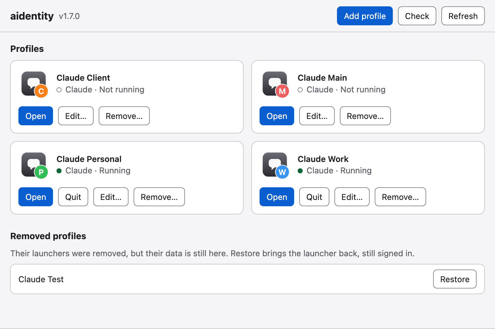

Keep work and home apart.
Your work account stays open all day. Your personal one is in the next window. You never sign out, so your open chats stay where they are.
aidentity
Stop signing out to switch accounts. aidentity opens the same Mac app once for each account, and each one stays signed in.
Free and open source. Verified with Claude Desktop, tested with ChatGPT, Slack, VS Code and 7 more.1
Your Mac opens each app once. So you get one account at a time, and every switch means signing out and signing in again. aidentity opens your app once for each account. Every window stays signed in, so your open chats stay where they are.
Each account gets its own icon, with a letter and a colour you pick. Click it and that account opens.
Pick a colour for Work
aidentity add Claude --profile Work --color blue
Your work account stays open all day. Your personal one is in the next window. You never sign out, so your open chats stay where they are.
One account for each client, each with an icon that carries the client's name. When the job ends, remove the icon. Add --purge to move its data to the Trash.
A new profile starts with an empty folder. aidentity does not copy, move or read your existing sign-in.
A new Claude Desktop profile starts with its own, empty list of MCP servers. Add --seed to copy yours across as a start.
VS Code, Cursor or Kiro, each copy with its own settings. Add --own-extensions to give it its own extensions too.
New in 1.7
aidentity ui --window shows your profiles as cards, each with its own icon. Open, quit, edit or remove one with a click. It opens no port and runs no server.2

aidentity ui lists every profile on one screen. Pick one with the arrow keys. One key opens, quits, recolours, renames or removes it.
Add an account, list them, rename one. Each job is one line, with tab completion for bash, zsh and fish. For scripts, aidentity list --json prints every profile as JSON.
aidentity changes nothing inside the app. It uses a start-up option the app already has.
The lock stops the app from starting twice.
It opens your app again with --user-data-dir, an option that points the app at a different data folder.
Cookies live in that folder, so each launcher opens its own account.
Your app is not copied or changed, nothing runs in the background, and you can remove everything aidentity made.
It is never copied, changed or signed again. So it keeps its signature, its keychain access and its own updates.
aidentity restore rebuilds it, still signed in. rm keeps your data. Add --purge and the data moves to the Trash.
No login item and no service. It makes no network calls except when you run aidentity update, and it never uses sudo.
Mostly bash, with nothing extra to install. Read the script on GitHub before you run it.
aidentity add Claude --main builds a Main icon. It opens your original account, even while profiles run.
Each release has a checksum, and its files are signed. Read what the signature proves.
The first command looks for network tools and sudo in the script. Only one line runs curl: the download in aidentity update. The second checks the script against the checksum of its release.
grep -nwE 'curl|wget|nc|ncat|ssh|scp|sudo|telnet' bin/aidentity
shasum -a 256 -c SHA256SUMS
bin/aidentity: OK
Worth knowing: aidentity does not encrypt profile data. Each data folder holds a live sign-in, just like the app's own folder. Read the safety notes
Chromium is the engine inside Google Chrome. Electron is a toolkit for desktop apps built on it. Run aidentity apps to see which of yours qualify.
Two accounts signed in at once, checked by hand.
Starts as its own copy, with its own data. Two sign-ins not checked by hand yet. Tell us how yours went.
Detected, but their built-in profiles usually do the job better.
Native apps have no Chromium inside, so aidentity add refuses them. A few Electron apps ignore the separate folder, and add cannot tell.
The newer ChatGPT app is Chromium inside. ChatGPT Classic is native, so it cannot work. For VS Code, Cursor and Kiro, keep profile names short: if a name is too long, aidentity refuses it and says how many characters to cut. See the full list and notes
Know before you install
While profiles run, the Dock shows the app's own tile for each one, with the same name and icon. macOS reads both from inside the app, and aidentity never changes the app.
Paste one line into Terminal. You sign in once for each account.
curl -fsSL https://github.com/PiniShv/aidentity/releases/latest/download/install.sh | bash
Paste it into Terminal. Say yes to the walkthrough at the end.
brew install pinishv/tap/aidentity
Then run aidentity setup to start the walkthrough.
The installer checks the download, never uses sudo and leaves your shell files alone.
The walkthrough lists your apps. Choose one and name the account, for example Work.
For example Claude Work. Sign in once with the other account, then drag the icon to your Dock.
If the app is already open, quit it first. Sign in to the new icon, then open the app again. Some apps sign in through your browser, and macOS hands the result to the window that started first. Read why you quit the app first
Build your recipe: pick apps and colours, copy the commands
Press Cmd + Space, type Terminal, press Return. Paste the line and press Return again. Read the installer first, or build from source.
No. Your app is never copied, changed or signed again, so it keeps its own updates. aidentity only reads the app's files, to check that it is built on Chromium or Electron.
Your original account is never moved or changed. aidentity reads only Claude Desktop's tool list (MCP servers) from it, and only when you add --seed to copy that list into a new profile.
aidentity does not get around sign-in, share credentials or change the app. It gives each account its own local data folder, using a documented command-line option. You still sign in to each account normally, with its own details.
Terms differ by product and plan, and some limit how many sessions one paid user can run, so check yours. This is not legal advice.
That is between you and the vendor. It depends on whether you have two separate accounts, which usually pay separately, or one account used twice. aidentity does not change what you may use. It changes how many windows you can have open.
No. A new profile starts with an empty folder, so you sign in once with that account's own details. aidentity does not copy, move or read your existing sign-in.
Yes. aidentity sets no limit, so run add once per account. Your Mac's memory is the real limit, because each open profile is the app running again.
No. It works with desktop apps. Command-line tools keep their sign-in in other ways.
No. aidentity is for macOS only.
Run aidentity update. It downloads the latest release, checks it against its published checksum and replaces the old version in one step. Add --check to see first whether a newer release is out. If you used Homebrew, run brew upgrade aidentity instead.
aidentity never checks for updates on its own. A copy older than 1.4 has no update command, so run the install line again. Read what update checks
Use the uninstaller. It removes the command, then lists every launcher and data folder that aidentity made. It removes the launchers and moves the data folders to the Trash only after you type delete. Your apps stay as they were.
If you installed with Homebrew, run brew uninstall aidentity to remove the command. Read the uninstall steps
Run aidentity doctor. It checks your setup and every profile. If it says problems can be fixed, run aidentity doctor --fix.
Still stuck? Open an issue with the doctor output. It can show your Mac user name and profile names, so remove anything private first.